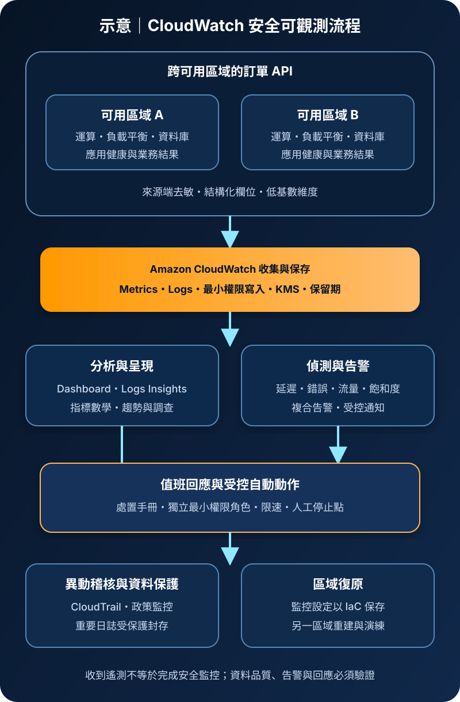

Amazon CloudWatch：監控、日誌與告警
Amazon CloudWatch 收集、保存、分析並呈現 AWS 資源、應用程式與自訂工作負載的遙測資料。它能把指標、日誌與事件轉為儀表板、查詢及告警，但不會自動決定正確的服務目標、移除敏感資料、修復故障或建立完整稽核證據。
作者：Dr. William｜查閱與發布：2026-09-06
服務定位
CloudWatch 是 AWS 的監控與可觀測性服務。許多 AWS 服務會提供基本指標；應用程式、作業系統與容器可透過 CloudWatch Agent、Embedded Metric Format、API 或支援的遙測整合送出額外資料。CloudWatch Logs 保存日誌並支援查詢、篩選與訂閱；Alarms 依指標或數學運算結果改變狀態，再通知或觸發受控動作。
CloudWatch 不等同 AWS CloudTrail。CloudWatch 著重運作狀態與遙測，CloudTrail 著重 AWS API 與帳號活動。安全調查通常需要兩者及應用稽核紀錄互相對照。
核心概念
指標、維度與告警
- Metric：依命名空間、名稱、時間戳與數值形成時間序列；維度組合會建立不同序列。
- Resolution／Period：資料解析度與告警評估週期影響偵測速度、噪音及成本。
- Alarm：依門檻、異常偵測、Metric Math 或複合條件判定 OK、ALARM 或 INSUFFICIENT_DATA。
- Dashboard：集中顯示關鍵指標、日誌查詢與警報狀態，但圖表本身不替代回應程序。
日誌、查詢與保留
- Log group／stream：日誌群組承擔保留期、KMS、權限與訂閱等治理；串流組織同一來源的事件。
- Logs Insights：按掃描資料量查詢日誌，適合事故分析與趨勢探索；高頻寬查詢需設成本邊界。
- Metric filter：從日誌模式產生指標，可監控錯誤或安全事件，但規則必須測試漏報與誤報。
- Subscription：可把符合條件的日誌近即時送往支援目的地，需限制目的端權限並處理失敗與重試。
適合與不適合的使用情境
適合
- 集中觀察 AWS 資源、應用程式、容器與作業系統的健康度、容量、延遲、錯誤與業務指標。
- 依服務水準指標建立告警、值班通知、事件調查儀表板及受控自動回應。
- 集中保存有明確保留期的應用與基礎設施日誌，並以查詢或篩選支援故障排除。
- 跨帳號集中可觀測資料，讓平台或營運團隊在授權範圍內查看多個環境。
不適合或不能單獨完成
- 需要完整 AWS API 稽核軌跡時，必須另行啟用並保護 CloudTrail；CloudWatch 不能替代它。
- 要求不可變、超長期或法規型封存時，僅保留線上日誌群組通常不足，需設計受保護的封存與驗證流程。
- 告警收到後仍沒有負責人、分級、處置手冊與演練，CloudWatch 無法自行完成事故管理。
- 把所有高基數欄位轉為自訂指標，或無限制匯入除錯日誌，容易造成不可控成本與搜尋噪音。
示意故事案例：跨可用區域的訂單 API 監控
以下為架構示意，不代表特定組織或正式部署。訂單 API 分布於兩個可用區域。負載平衡器、運算服務與資料庫提供服務指標；應用只輸出經遮罩的結構化日誌及低基數業務指標。傳輸端以最小權限角色寫入指定日誌群組與命名空間，機密由 Secrets Manager 或 Parameter Store 提供，禁止進入日誌。CloudWatch 依延遲、錯誤率、流量與飽和度建立儀表板和複合告警；告警經受控通知路徑送往值班人員，緊急自動動作使用獨立角色。CloudTrail 保存設定、權限與告警變更事件。日誌群組設定保留期與適用的 KMS 加密，重要紀錄另行封存；監控設定與儀表板以 IaC 保存並可在另一區域重建。

建置與運作流程
- 定義目標：先記錄服務水準指標、可接受門檻、資料分類、RTO/RPO、值班責任及事故分級。
- 盤點訊號：區分服務內建指標、自訂指標、應用日誌、作業系統遙測、分散式追蹤與 CloudTrail 稽核資料。
- 設計資料模型：使用穩定命名空間、必要維度與結構化欄位；限制使用者 ID、請求 ID 等高基數值成為指標維度。
- 建立收集路徑：Agent 或工作負載角色只可寫入指定目的地，管理人員使用聯合登入、MFA 與短期角色，不建立共用長期憑證。
- 阻擋敏感資料：在來源端遮罩個資與機密；機密由 Secrets Manager／Parameter Store 注入，禁止記錄授權標頭、連線字串或認證材料。
- 設定保護：日誌群組明確指定保留期、適用的 KMS 金鑰與資源政策；跨帳號分享、訂閱及查詢角色採最小權限。
- 建立偵測：以症狀導向的延遲、錯誤、流量、飽和度與業務結果建立告警，設定缺失資料處理、評估週期及複合條件。
- 連接回應：通知目的地、值班表與自動動作均需驗證；自動回應使用獨立最小權限角色、限速、逾時、失敗處理及人工停止點。
- 集中稽核：以 CloudTrail 追蹤 CloudWatch、IAM、KMS 及通知設定變更，並對刪除日誌、停用告警與政策變更建立偵測。
- 測試與調校：注入可控故障，驗證資料到達時間、門檻、通知、處置手冊、恢復與結案；持續移除無效告警。
- 控制成本：為日誌設保留與篩選，檢查自訂指標、Container Insights、查詢掃描量、告警、儀表板與跨區資料傳輸。
- 準備復原：以 IaC 保存告警、儀表板與日誌設定；重要紀錄依要求備份或封存，並演練另一區域的監控重建與通知切換。
成本與可用性考量
CloudWatch 成本依使用功能而異，常見項目包含自訂指標、API 請求、日誌擷取、儲存、分析掃描、告警、儀表板、Container Insights、Application Signals 及資料傳輸。AWS 服務提供的基本監控與較細緻監控可能有不同費用。高基數維度、過量除錯日誌、無期限保存及大範圍重複查詢都會放大成本；應以查閱日的區域定價、免費額度與實際資料量重新估算。
CloudWatch 是區域性服務，多個功能的支援與資料位置應依服務文件確認。單一區域的遙測與告警不能證明跨區故障時仍可觀測。關鍵工作負載需讓各區域具有獨立監控與通知能力，並以跨帳號或外部路徑提供必要的管理視角。告警狀態也可能受資料延遲、缺失、取樣、配額與通知目的地故障影響。
監控設定可由 IaC 重建，但歷史遙測、重要安全日誌與調查證據需要另外依 RPO、保留及法規要求保存。備份目的地、KMS 金鑰、權限與還原查詢必須共同測試。
CloudWatch 特有資安風險與控制
- 機密與個資寫入日誌：應用可能記錄認證標頭、查詢參數、病歷或連線資訊。來源端採允許清單與遮罩，限制讀取、查詢及匯出權限，並建立資料外洩偵測與刪除應變。
- 日誌竄改或刪除：寬鬆的 DeleteLogGroup、DeleteLogStream、PutRetentionPolicy 或 PutResourcePolicy 會破壞證據。分離寫入、查詢與管理角色，使用 CloudTrail 偵測變更，重要紀錄另存受保護封存。
- 告警遭停用：攻擊者可修改門檻、刪除告警或改變通知目的地。以 IaC 管理基準，限制 PutMetricAlarm、DeleteAlarms、DisableAlarmActions 等權限並監控異動。
- 自動回應權限過大：告警觸發的自動化若能廣泛停止、修改或刪除資源，可能放大誤報或帳號入侵。動作角色限制資源、條件與範圍，採限速、審批或可逆步驟。
- 自訂指標與日誌注入：未受控來源可偽造健康訊號、污染查詢或觸發告警。寫入角色綁定工作負載與目的地，驗證結構、來源及合理值域，並監控異常資料量。
- 跨帳號可觀測權限：集中觀測角色可能讀取多帳號敏感日誌。以組織、帳號、資源與標籤限制授權，管理身分使用 MFA 與短期憑證，定期檢閱資源政策。
- KMS 與訂閱目的地誤設：金鑰政策或跨帳號日誌目的地設定錯誤，可能導致資料不可讀或外送。限制金鑰管理與解密權限，驗證目的地政策、失敗重試及停用金鑰情境。
- 網路路徑過度公開：私有工作負載若不需公網即可透過適用 VPC Endpoint 存取 CloudWatch API。端點政策、Security Group、DNS 與出口規則只允許必要路徑，並測試阻擋結果。
- 保留與成本型阻斷：無保留期或日誌洪水可能造成高額費用並掩蓋事件。設定保留、預算、配額監控、異常擷取量告警與降噪策略，但不得無聲丟棄必要稽核紀錄。
共同責任邊界
AWS 負責 CloudWatch 受管服務及底層雲端基礎設施的安全。客戶負責選擇要收集的訊號、Agent 與應用設定、IAM 與資源政策、網路路徑、資料分類與遮罩、KMS 金鑰政策、保留期限、告警邏輯、通知、自動動作、備份封存與事故處理。
客戶仍須管理 IAM 最小權限、管理身分 MFA 與短期憑證、網路隔離與公開存取、KMS 加密、Secrets Manager／Parameter Store、CloudTrail／CloudWatch、備份與跨區復原。CloudWatch 能保存與分析遙測，不代表資料來源可信、告警必然有效或證據已符合保存要求。
上線前可執行檢查清單
- □ 每項工作負載已有可量測的服務目標、關鍵指標、資料分類、RTO/RPO、責任人與事故分級。
- □ 人員使用聯合登入、MFA 與短期角色；資料寫入、查詢、匯出、告警及管理權限已分離並採最小權限。
- □ 私有工作負載使用必要的受控出口或 VPC Endpoint；端點政策、Security Group 與 DNS 已完成允許及拒絕測試。
- □ 日誌與指標不含認證材料或不必要個資；機密只由 Secrets Manager／Parameter Store 等受控來源提供並輪替。
- □ 日誌群組已設定保留期、適用 KMS 金鑰、資源政策及跨帳號邊界；金鑰停用與解密流程已測試。
- □ 指標維度避免高基數；日誌層級、擷取量、查詢掃描量、自訂指標與預算告警已建立成本基準。
- □ 延遲、錯誤、流量、飽和度與業務結果告警均已注入測試；缺失資料、誤報、抑制及恢復條件明確。
- □ 通知目的地與值班路徑可用；自動動作使用獨立最小權限角色，具有範圍、限速、失敗處理與人工停止點。
- □ CloudTrail 可追蹤 CloudWatch、IAM、KMS 及通知設定變更；刪除日誌、停用告警與政策變更會觸發告警。
- □ 重要日誌已有受保護的備份或封存及還原驗證；監控 IaC、KMS、通知與另一區域重建流程已演練。
AWS 官方一手來源
- Amazon CloudWatch User Guide｜What is Amazon CloudWatch?（查閱：2026-09-06）
- Amazon CloudWatch concepts（查閱：2026-09-06）
- Amazon CloudWatch Logs User Guide｜What is CloudWatch Logs?（查閱：2026-09-06）
- Security in Amazon CloudWatch（查閱：2026-09-06）
- Identity-based policies for CloudWatch Logs（查閱：2026-09-06）
- Amazon CloudWatch pricing（查閱：2026-09-06）
內容說明
本文依查閱日可用的 AWS 官方文件整理，作為基礎學習與架構討論材料；實際部署仍須依區域功能、最新價格與配額、資料量、工作負載測試、組織政策、法規及風險評估調整。